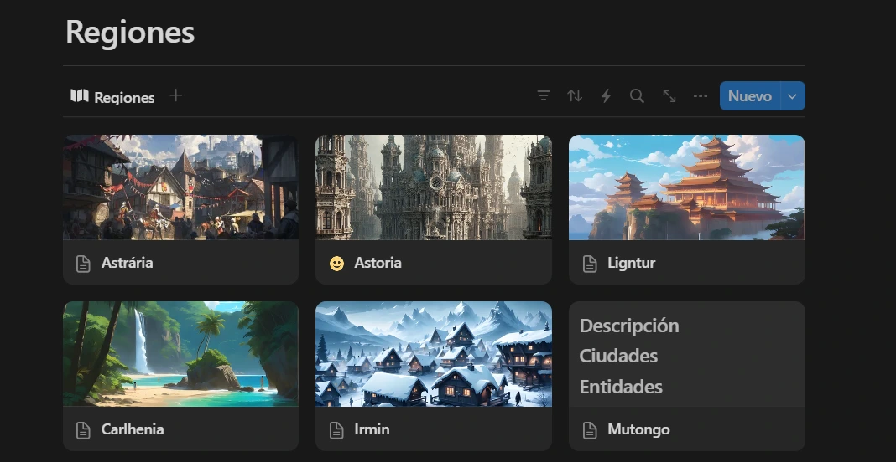
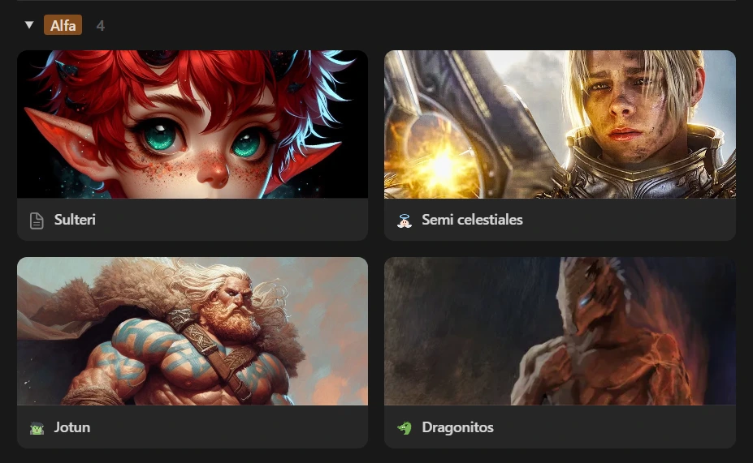

DESENCADENADOS
José Manuel Duarte Peris
Desencadenados es un sistema de rol que ofrece a los jugadores una amplia gama de opciones y posibilidades para explorar. Con Desencadenados, los jugadores pueden sumergirse en un mundo imaginario y tomar decisiones que influirán en el desarrollo de sus personajes y en la historia en general. Además, este sistema de rol fomenta la creatividad y la interacción entre los jugadores, ya que les permite crear y desarrollar sus propias historias dentro del marco establecido por el juego.
El objetivo de esta breve web es introducir el sistema al público y explicar los 3 principales sistemas de magia.
Uno de los mayores puntos de interes de Desencadenados, si no el que más, es su sistema de magia y el como se desarrollan los combates. Se diferencia de otros sistemas de rol en el hecho de que buscamos un sistema que añada realismo pero sin obstruir la experiencia. Por ejemplo, los magos no están limitados a hechizos que hacen "x", si no que pueden usar el elemento que manipulen libremente dentro del nivel de su personaje. Y cuando hablamos de realismo nos referimos principalmente al sistema de salud, donde las partes del cuerpo son independientes (no una piscina de vida) y los personajes y enemigos pueden morir de un mal golpe.

Desencadenados es un sistema que recompensa mucho la especialización y castiga la generalización. Es decir, un personaje de tier 1 (stat al nivel 10) podrá dar guerra e incluso vencer a enemigos o jugadores de tier 2 (stat al nivel 20) si a este primero se le da muy bien algo, como luchar con espada, y a estos últimos no. Y esto es muy importante, ya que las diferencias entre tiers son muy altas. Por ejemplo, un tier 1 múltiplica sus tiradas por 1, un tier 2 por 2, un tier 3 por 3... Puedes probar tú mismo en la calculadora oficial.
Como todo sistema que incluye un mundo original, nosotros hemos creado y seguimos creando criaturas razas jugables y monstruos originales del sistema. Las razas incluyen pasivas e inclusivo activas que tienen com objetivo hacer que cada especie brinde una experiencia distinta a otras, fomentando así la diversidad y creatividad dentro de los grupos de jugadores. Dentro de las razas jugables distingimos principalmente entre 2 tipos: las normales y las alfa. Como el nombre indica, las alfa son razas más fuertes. Pero para poder crear un personaje alfa, el jugador deberá gastar tokens alfa, una divisa que se obtiene jugando algunos eventos o tras superar metas difíciles en las campañas a las que pertenezca.

Otro factor determinante en el sistema y, en mi humilde opinión, el mejor, es el hecho de que las acciones de los personajes repercuten en el mundo. Es decir, si dos grupos de jugadores están jugando sus respectivas campañas en la misma ciudad y uno de los grupos mata a un NPC importante del otro grupo, esto afectará en como se desenvuelve esa campaña. Y no sería la primera vez que pasa... Además, los jugadores pueden tener negocios en el mundo, los cuales les proporcionarán dinero o recursos. También pueden aprender oficios o habilidades de maestros. Incluso pueden negarse a realizar peleas o misiones, y el resto del grupo deberá seguir adelante sin ese jugador, el cual a su vez podrá hacer en ese tiempo otras cosas.
En definitiva, somos un pequeño grupo de desarrolladores que queremos crear un sistema con gran libertad y poco a poco, aportando de lo que cada uno sabe, vamos creando, mejorando y expandiendo el sistema. El sistema aún está en desarrollo, y aunque es jugable y de hecho se juega, no está ni de lejos acabado. Queremos implementar aún muchas más cosas.
En el siguiente video podrás ver como crear una partida de rol online usando Roll20, una de las páginas de tabletop más populares.
Este enlace te llevará a la web de Roll20.